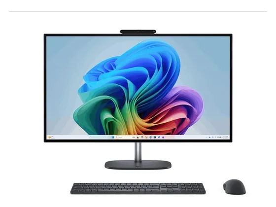

HP OmniStudio X 27" : avis, tests et prix
Le verdict en une phrase. La version 27 pouces de l'OmniStudio X : même soin de fabrication, encombrement réduit.
N° 10 sur 10 dans le top 10 ordinateurs tout-en-un.

Pour qui ?
Vous voulez un tout-en-un Windows soigné en 27 pouces, avec une bonne webcam.
Vous voulez pouvoir le faire évoluer, ou votre budget est limité.
Le consensus de la presse
Le test recensé ne donne pas de note chiffrée : nous renvoyons vers l'article plutôt que d'inventer une note. Dernier test relevé : juillet 2025.
Où l'acheter
La configuration peut différer d'un marchand à l'autre : vérifiez la fiche avant d'acheter. Seuls les liens Amazon sont affiliés à ce jour ; les autres sont de simples liens directs. Aucun n'influence les notes ni le classement.
Tous les tests recensés
Chaque ligne renvoie vers le test d'origine. Les notes sont converties sur 10 ; « test » signale un article sans note chiffrée. Notre méthode.
- IT Protest
Source du relevé : Synthèse CommentChoisir.
Les alternatives pour le même usage
Tout le top 10 → HP OmniStudio 27"Un grand écran et un seul câble pour un budget contenu : suffisant pour la famille et la bureautique.
N° 8 · Le minimaliste
HP OmniStudio 27"Un grand écran et un seul câble pour un budget contenu : suffisant pour la famille et la bureautique.
N° 8 · Le minimaliste
 Asus V400 AiOUn tout-en-un fin et sobre, en 24 ou 27 pouces, bien équipé en mémoire et en stockage dans ses versions Core 7.
N° 9 · Le tout-en-un écran
Asus V400 AiOUn tout-en-un fin et sobre, en 24 ou 27 pouces, bien équipé en mémoire et en stockage dans ses versions Core 7.
N° 9 · Le tout-en-un écran
 MSI Modern AM273Q AIUn 27 pouces WQHD qui peut aussi servir d'écran pour un autre appareil : une polyvalence rare sur un tout-en-un.
MSI Modern AM273Q AIUn 27 pouces WQHD qui peut aussi servir d'écran pour un autre appareil : une polyvalence rare sur un tout-en-un.
Questions fréquentes
Que pense la presse de l'ordinateur HP OmniStudio X 27" ?
1 test presse recensé, sans note chiffrée. La version 27 pouces de l'OmniStudio X : même soin de fabrication, encombrement réduit.
Quels sont les points faibles relevés par les tests ?
Prix élevé ; Peu évolutif.
À qui s'adresse le modèle HP OmniStudio X 27" ?
Vous voulez un tout-en-un Windows soigné en 27 pouces, avec une bonne webcam. À éviter si : vous voulez pouvoir le faire évoluer, ou votre budget est limité.
Où l'acheter, et à quel prix ?
Comptez environ 1 710 € (prix indicatif constaté en octobre 2026). Nous l'avons trouvé en vente chez Amazon et Darty. Les prix changent vite et la configuration peut différer d'un marchand à l'autre : seul le prix affiché par le marchand fait foi.